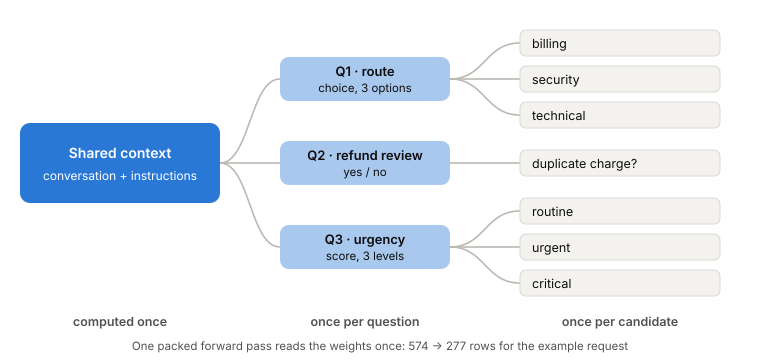
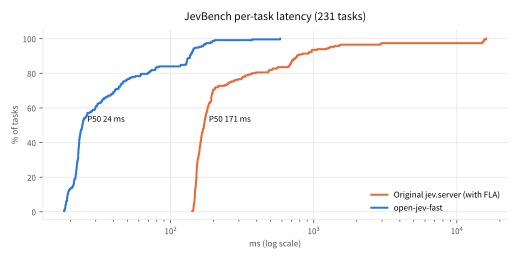

Open-Jev-27B inference in 20.1 ms instead of 257.0 ms on one local NVIDIA B300. Same model, bf16, a drop-in replacement for Open-Jev's local server.
An inference backend for Open-Jev[1]. It runs locally, keeps the model and the request format of Open-Jev's local server, and replaces the forward pass with fused CUDA kernels, a prefix tree that computes shared prompt text once, and CUDA Graphs.
Six hand-written kernels replace every non-matmul op in a layer. Kernels per request drop from ~5000 to 945, and the CPU launch bottleneck goes away.
The shared context is computed once, each question once, and each candidate only its tail, all in one packed forward pass.
Merged weights, split-K with fp32 partial sums, per-shape cuBLASLt algorithms, and one CUDA Graph per request shape.

Prefix tree for the example request. Linear-attention layers still run each candidate over its full path, so results match the original; full-attention layers use an ancestor mask.

Cumulative share of the 231 public JevBench[11] tasks finished within a given latency, sent over HTTP to the local server, one request at a time.
| Original jev.server (with FLA) | open-jev-fast | |
|---|---|---|
| Accuracy | 198 / 231 | 197 / 231 |
| Mean latency | 703 ms | 51.3 ms |
| P50 / P95 | 171 / 1272 ms | 24.2 / 148 ms |
| Slowest task | 16.0 s | 0.58 s |
Full details, the step-by-step breakdown and failed attempts are in the README and report (PDF).